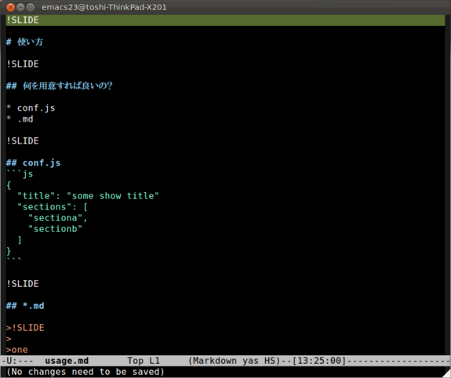

Markdown で書ける
最低限ファイル2つ(conf.js, *.md)でOK
デフォルトでそこそこカッコイイ
シンタックスハイライトしてくれる！
object HelloWorld {
def main(args: Array[String]): Unit = {
println("Hello, World!")
}
}
画像貼るのも簡単
レイアウトもしやすい
<center>
<span class="pink">scalaちゃんかわいい</span>
</center>
$ git clone git://github.com/softprops/picture-show.git
$ cd picture-show
$ sbt publish-local
$ cs softprops/picture-show
{
"title": "some show title"
"sections": [
"sectiona",
"sectionb"
]
}

picture-show-introduction ├── conf.js ├── css │ └── custom.css └── intro ├── intro.md └── scalachan.png
$ pshow
http://localhost:3000 で確認
$ pshow --offline -o=/path/to/output
でexport
Picture Showでスライドばんばん作って発表しましょう